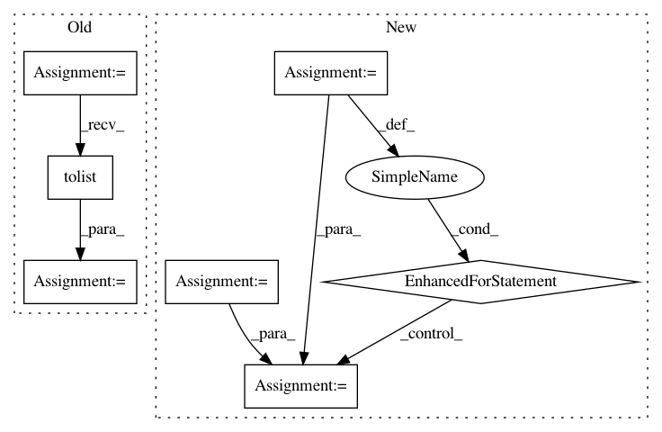

43ae81ebbe860010aaaa3d739284ebeb8284e59e,plotnine/facets/facet.py,,unique_combs,#Any#,556
Before Change
_df = df.ix[0:-1, df.columns]
// List of unique values from every column
lst = [x.unique().tolist() for x in (df[c] for c in df)]
rows = itertools.product(*lst)
for i, row in enumerate(rows):
_df.loc[i] = row
return _df
def layout_null():
After Change
// List of unique values from every column
lst = (x.unique() for x in (df[c] for c in df))
rows = list(itertools.product(*lst))
_df = pd.DataFrame(rows, columns=df.columns)
// preserve the column dtypes
for col in df:
_df[col] = _df[col].astype(df[col].dtype, copy=False)
return _df
def layout_null():
In pattern: SUPERPATTERN
Frequency: 3
Non-data size: 7
Instances
Project Name: has2k1/plotnine
Commit Name: 43ae81ebbe860010aaaa3d739284ebeb8284e59e
Time: 2017-05-07
Author: has2k1@gmail.com
File Name: plotnine/facets/facet.py
Class Name:
Method Name: unique_combs
Project Name: acoular/acoular
Commit Name: bc22d044fac59b29d4e5f83e00c4be8448a4bc43
Time: 2018-05-03
Author: gert.herold@tu-berlin.de
File Name: acoular/fbeamform.py
Class Name: BeamformerBase
Method Name: calc
Project Name: acoular/acoular
Commit Name: bc22d044fac59b29d4e5f83e00c4be8448a4bc43
Time: 2018-05-03
Author: gert.herold@tu-berlin.de
File Name: acoular/fbeamform.py
Class Name: BeamformerCapon
Method Name: calc